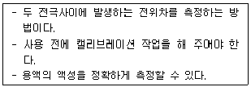
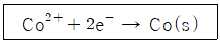

화학분석기능사 (2007-07-15 기출문제)
1과목: 일반화학
1. 한 원소의 화학적 성질을 주로 결정하는 것은?
- 원자번호
- 원자량
- 전자의 수
- 제일 바깥 전자껍질의 전자수
(정답률: 80%)

2. 분자식이 C18H30인 탄화수소 1분자 속에는 2중 결합이 최대 몇 개 존재할 수 있는가? (단, 3중 결합은 없다.)
- 2
- 3
- 4
- 5
(정답률: 75%)
3. 다음 물질 중 분산력(반데르발스힘)이 가장 큰 물질은?
- CH4
- SiH4
- CF4
- CCl4
(정답률: 77%)
4. 11g의 프로판(C3H8)을 완전연소시키면 몇 몰(mol)의 이산화탄소(CO2가 생성되는가? (단, C, H, O의 원자량은 각각 12, 1, 16 이다.)
- 0.25
- 0.75
- 1.0
- 3.0
(정답률: 69%)
5. 다음 변화 중 물리적 변화에 해당하는 것은?
- 연소
- 승화
- 발효
- 금속이 공기 중에서 녹슬 때
(정답률: 78%)
6. 분자량이 큰(100,000 정도) 화합물 100g을 물 1000g에 용해시켰을 때 이것의 분자량의 측정에 가장 적당한 방법은 무엇인가?
- 중기압 내림
- 끓는점 오름
- 어는점 내림
- 삼투압
(정답률: 66%)
7. 다음 중 반응성이 가장 작은 원소의 족은?
- 0족
- 1족
- 2족
- 3족
(정답률: 87%)
8. (NH4)2SO4 66g에 들어있는 이온(NH4+ 와 SO42-)은 총 몇 몰(mol)은 인가? (단, (NH4)2SO4의 화학식량은 132 이다.)
- 1
- 1.5
- 2
- 3
(정답률: 55%)
9. 다음 중 아염소산칼륨은 어느 것인가?
- KClO
- KClO2
- KClO3
- KClO4
(정답률: 88%)
10. 다음 반응식 중 첨가반응에 해당하는 것은?
- 3C2H2 → C6H6
- C2H4 + Br2 → C2H4Br2
- C2H5OH → C2H4 + H2O
- CH4 + Cl2 → CH3Cl + HCl
(정답률: 80%)
11. 온도가 10℃ 올라감에 따라 반응속도는 2배 빨라진다. 20℃때 보다 60℃ 에서는 반응속도가 몇 배 더 빨라지겠는가?
- 8배
- 16배
- 60배
- 64배
(정답률: 79%)
12. 다음 화학반응 중 복분해는 어느 것인가? (단, A, B, C, D 는 원자 또는 라디칼을 나타낸다.)
- A + B → AB
- AB → A + B
- AB + C → BC + A
- AB + CD → AD + BC
(정답률: 89%)
13. 다음 중 양쪽성원소가 아닌 것은?
- Ni
- Sn
- Zn
- Al
(정답률: 69%)
14. 황화수소(H2S)의 일반적인 성질 중 틀린 것은?
- 특유한 냄새를 가진 유독한 기체이다.
- 환원제이다.
- 물에 불용이다.
- 알칼리에 반응하여 염을 생성한다.
(정답률: 64%)
15. 일정한 온도와 압력에서 20mL 의 수소와 10mL의 산소가 반응하면 20mL 의 수증기가 발생한다. 이 관계를 설명할 수 있는 법칙은?
- 기체반응의 법칙
- 일정성분비의 법칙
- 아보가드로의 법칙
- 질량보존의 법칙
(정답률: 72%)
16. 다음 납축전지에 대한 설명 중 틀린 것은?
- 충전과 방전이 모두 일어난다.
- 산화전극에서 일어나는 반응식은 Pb + SO42- ⇄ PbSO4 + 2e- 이다.
- 환원전극에서 일어나는 반응식은 PbO2 + 4H3O+ + SO42- + 2e- ⇄ PbSO4 + 6H2O 이다.
- 축전지가 완전히 방전될 때 반응물인 황산의 농도는 증가한다.
(정답률: 61%)
17. 다음 할로겐화은(AgX) 중 침전되지 않고 물에 잘 녹는 물질은? (단, X는 할로겐족 원소이다.)
- AgI
- AgBr
- AgF
- AgCl
(정답률: 54%)
18. 평형상태에서 산의 전량을 1 이라고 할 때, H+ 농도를 나타낸 수치를 무엇이라고 하는가?
- 염기도
- 용해도
- 전리도
- 반감도
(정답률: 78%)
19. 다음 물질 중 정전기적 힘에 의한 결합이 아닌 것은?
- NaCl
- CaBr2
- NH3
- KBr
(정답률: 60%)
20. 다음 화합물 중 염소(Cl)의 산화수가 +3 인 것은?
- HClO
- HClO2
- HClO3
- HClO4
(정답률: 82%)
2과목: 분석화학
21. 탄화칼슘에 물을 작용시켜 얻을 수 있는 가스로서 용접가스 또는 PVC 등의 합성수지의 원료로 사용되는 것은?
- C2H2
- H2O2
- CO
- HCN
(정답률: 68%)
22. 다음 중 은거울 반응을 하는 분자는?
- 페놀
- 에탄올
- 포름알데히드
- 메틸아세테이트
(정답률: 69%)
23. 용매 1000g 중에 포함된 용질의 몰수로서 나타내는 농도는?
- 몰농도
- 몰랄농도
- g농도
- 노르말농도
(정답률: 69%)
24. 다음 등전자 이온 중 이온반지름이 가장 큰 것은?
- 12Mg2+
- 11Na+
- 10Ne
- 9F-
(정답률: 76%)
25. 반감기가 5년인 방사성원소가 있다. 이 동위원소 2g이 10년이 경과하였을 때 몇 g이 남겠는가?
- 0.125
- 0.25
- 0.5
- 1
(정답률: 70%)
26. 시료 중의 염화물을 정량하기 위하여 염화물을 질산은(AgNO3)으로 침전시켜 염화은(AgCl) 0.245g을 생성시켰다. 시료 중 염소의 양은? (단, 원소의 원자량은 Ag는 107.9, N은 14, O는 15, Cl은 34.45 이다.)
- 0.02g
- 0.06g
- 0.12g
- 0.16g
(정답률: 56%)
27. 고체가 액체에 용해되는 경우 용해속도에 영향을 주는 인자로서 가장 거리가 먼 것은?
- 고체 표면적의 크기
- 교반속도
- 압력의 증감
- 온도의 변화
(정답률: 69%)
28. 기체의 용해도에 대한 설명으로 옳은 것은?
- 질소는 물에 잘 녹는다.
- 무극성인 기체는 물에 잘 녹는다.
- 기체는 온도가 올라가면 물에 녹기 쉽다.
- 기체의 용해도는 압력에 비례한다.
(정답률: 80%)
29. 일정한 온도 및 압력하에서 용질이 용매에 용해도 이하로 용해된 용액을 무엇이라고 하는가?
- 포화용액
- 불포화용액
- 과포화용액
- 일반용액
(정답률: 87%)
30. 티오시안산 적정법(볼하드법)에서 사용하는 지시약은?
- 메틸오렌지
- 페놀프탈렌
- 칠명반
- 메틸레드
(정답률: 63%)
31. 다음 황화물 중 흑색 침전이 아닌 것은?
- PbS
- CuS
- HgS
- CdS
(정답률: 70%)
32. 페놀류의 정색반응에 사용되는 약품은?
- CS2
- KI
- FeCl3
- (NH4)2Ce(NO3)6
(정답률: 74%)
33. 크산토프로테인(Xanthoprotein)반응은 단백질과 질산이 작용되는 반응인데 이 때 단백질은 어떤 색으로 변화하는가?
- 초록색
- 파랑색
- 검정색
- 노랑색
(정답률: 73%)
34. CuSO4 · 5H2O 중의 Cu를 정량하기 위해 시료 0.5012g을 칭량하여 물에 녹여 KOH를 가했을 때 Cu(OH)2의 청백색 침전이 생긴다. 이 때 이론상 KOH 는 약 몇 g 이 필요한가? (단, 원자량은 Cu는 63.54, S는 32, O는 16, K는 39 이다.)
- 0.1125
- 0.2250
- 0.4488
- 1.0024
(정답률: 54%)
35. 네슬러 시약의 조제에 사용되지 않는 약품은?
- KI
- HgI2
- KOH
- I2
(정답률: 66%)
36. AgNO3 10g을 정확히 정량하여 물에 녹인 뒤 500mL 메스플라스크의 눈금까지 희석시켰다. 이 용액은 몇 N 인가? (단, AgNO3 의 분자량은 169.89 이다.)
- 0.118
- 0.169
- 0.391
- 0.503
(정답률: 40%)
37. 음이온 정성분석에서 Cl-, Br-, I-, CNS- 이온의 침전을 생성하기 위하여 주로 사용하는 시약은?
- AgNO3
- NaNO3
- KNO3
- HNO3
(정답률: 58%)
38. 0.01M Ca2+ 50.0mL 와 반응하려면 0.⑤M EDTA 몇 mL 가 필요한가?
- 10
- 25
- 50
- 100
(정답률: 67%)
39. 1차 표준물질이 갖추어야 할 조건 중 틀린 것은?
- 조성이 순수하고 일정해야 한다.
- 분자량이 작아야 한다.
- 건조 중 조성이 변하지 않아야 한다.
- 습기, CO2 등의 흡수가 없어야 한다.
(정답률: 85%)
40. 다음 물질 중 수용액에서 전해질은 어느 것인가?
- 염산
- 포도당
- 설탕
- 에탄올
(정답률: 58%)
3과목: 기기분석
41. Fe2+ 의 이온이 Fe3+ 이온으로 60%가 산화되었다. 이 때의 전위차는 몇 V 인가? (단, E°는 0.78V 이다.)
- 0.75
- 0.77
- 0.79
- 0.81
(정답률: 52%)
42. 12500쿨롱의 전기량으로 Ag+를 Ag로 환원하였을 때 약 몇 g의 은(Ag)을 얻을 수 있는가? (단, Ag의 원자량은 107.88 이다.)
- 6.99
- 13.97
- 27.94
- 55.88
(정답률: 58%)
43. NaCl 용액을 기준으로 만든 비중계는?
- 셀룰로오스 비중계
- 알코올 비중계
- 보오메 비중계
- 오스트발트 비중계
(정답률: 51%)
44. 굴절계를 사용하여 액체 시료의 굴절을 측정할 때 액체 경계면의 빛의 분산을 없애기 위하여 사용하는 것은?
- Amici 프리즘
- 확대경
- 임계광선 조절기
- 조사용 프리즘
(정답률: 69%)
45. 액체 흡착제를 가스크로마토그래피에서 사용할 때 분리의 원리가 되는 것은?
- 흡착계수의 차
- 분배계수의 차
- 확산전류의 차
- 전개가스 용적의 차
(정답률: 45%)
46. 가스크로마토그래피에서 용출크로마토그래프로 고정상이 고체인 경우에 컬럼내에 흡착제로 충전시킬 수 없는 것은?
- 활성알루미나
- 실리카겔
- 활성탄소
- 유리
(정답률: 76%)
47. 금속나트륨(Na)을 보관하려면 어느 물질 속에 저장하여야 하는가?
- 물
- 파라핀
- 알코올
- 이산화탄소
(정답률: 81%)
48. 적외선분광광도계에 의한 고체시료의 분석방법 중 고체 시료의 취급 방법이 아닌 것은?
- 용액법
- 페이스트(paste)법
- 기화법
- KBr 정제법
(정답률: 61%)
49. 전위차 적정에 대한 설명 중 틀린 것은?
- 일반적인 기준전극은 백금으로 만든다
- 적정분석법에서 종말점의 결정에 이용된다.
- 기준전극은 Nernst식에 따라야 한다.
- 기준전극은 고정된 전위를 유지하여야 한다.
(정답률: 55%)
50. 다음 보기는 어떤 기기에 대한 설명인가?

- 비색계
- 점도계
- 굴절계
- pH 미터
(정답률: 75%)
51. 분광광도계에서 광전관, 광전자증배관, 광전도셀 또는 광전지 등을 사용하여 빛의 세기를 측정하여 전기신호로 바꾸는 장치 부분은?
- 광원부
- 파장선택부
- 시료부
- 측광부
(정답률: 67%)
52. 가스크로마토그래피에 대한 설명 중 틀린 것은?
- 운반가스는 일정한 유량으로 흘러야 한다.
- 일반적으로 유기화합물의 정성 및 정량분석에 이용한다.
- 시료도입부, 분리관, 검출기 등은 적정한 온도로 유지해 주어야 한다.
- 충진물로 흡착성 고체분말을 사용한 것을 기체-액체 크로마토그래피라고 한다.
(정답률: 80%)
53. 기체크로마토그래피에서 주로 사용하는 운반 기체는?
- 염소
- 아세틸렌
- 암모니아
- 아르곤
(정답률: 84%)
54. 폴라로그래피에서 확산 전류는 조성, 온도, 전극의 특성을 일정하게 하면 무엇에 비례하는가?
- 전해액의 부피
- 전해조의 크기
- 금속 이온의 농도
- 대기압
(정답률: 71%)
55. 적외선흡수스펙트럼에서 흡수띠가 주파수 1690~1760cm-1 영역에서 강하게 나타났을 때 예측되는 화합물은?
- 알칸류
- 아민류
- 케톤류
- 아미이드류
(정답률: 58%)
56. 수산화이온농도(OH-)가 1.0×10-4 일 때의 pH는?
- 4
- 6
- 8
- 10
(정답률: 61%)
57. CoCl2 · XH2O 0.403g을 포함한 용액이 완전히 전기분해되어 백금 환원전극 표면에 코발트금속 0.100g이 석출되었다. 이 시약의 조성은? (단, Co 원자량은 59.0, CoCl2 화학식량은 130, H2O의 분자량은 18.0 이다.)

- CoCl2 · 2H2O
- CoCl2 · 4H2O
- CoCl2 · 6H2O
- CoCl2 · 8H2O
(정답률: 59%)
58. 다음 중 HPLC(고성능액체크로마토그래피)에 사용하는 검출기가 아닌 것은?
- UV/Vis 검출기
- RI(Refractive Index) 검출기
- IR(Infrared) 검출기
- ECD(Electron Capture Detector) 검출기
(정답률: 65%)
59. 아세톤, 메탄올에 대한 설명 중 틀린 것은?
- 인화점이 높은 물질이다.
- 저장장소에 화기엄금 표시를 한다.
- 가열 및 충격을 피한다.
- 저장시 정전기 발생을 방지하여야 한다.
(정답률: 75%)
60. 다음 중 전자전이를 유발하는데 가장 큰 에너지를 요하는 것은?
- n → σ*
- n → π*
- σ → σ*
- π → π*
(정답률: 63%)